Kea-app
Oversigt:
- Link til GitHub-repository
- Brugerresearch
- Experience map
- Problemformulering
- Persona
- Storyboard
- Features og funktionaliteter
- Dokumentation af Design Charette
- Prototype
- UI-ikoner
- XD prototype
- Test af prototype
- Pitch-oplæg
- DX prototype 2
- Præsentation af XD-prototype
Opgavebeskrivelse:
Målet med opgaven er at fremstille en prototype på en KEA-app, som kan øge samarbejdet og det sociale fællesskab mellem de danske og internationale multimediedesignstuderende, samt evt. at forbedre jobmulighederne efter endt uddannelse.
Derudover skal den være udstyret med én eller flere funktioner, som kan gøre dagligdagen lettere, eller have features, som kan gøre en forskel for de studerende.
Til at researche og udvikle prototypen, vil jeg anvende Design Thinking's 7 faser til at opdele projektet i mere håndtérbare bidder, og til at hoppe frem og tilbage imellem disse områder, når det giver mening for udformningen, eller hvis nye idéer/informationer giver anledning til en anderledes implementering af design eller funktionalitet.
Link til GitHub-repository
https://github.com/erik8036granberg/04_ux-projektCommit & push med jævne mellemrum, for at holde repository opdateret.
Brugerresearch
Til at samle data og indsigter fra målgruppen (som rammes forholdsvist nøjagtigt, da vi som studerende selv indgår som “kunde” for app-prototypen) har multimediedesignholdet udfyldt et spørgeskema. Overordnet set, får man på denne måde demografisk data, IT- og smartphone-vaner, hvad de synes om KEA/uddannelsen, samt den nuværende relation til de internationale studerende.
Dette er gjort via Google Forms + Google Sheets som output. Herefter kan man studere/udtrække relevante oplysninger, eller visualisere resultatet ved brug af grafer.
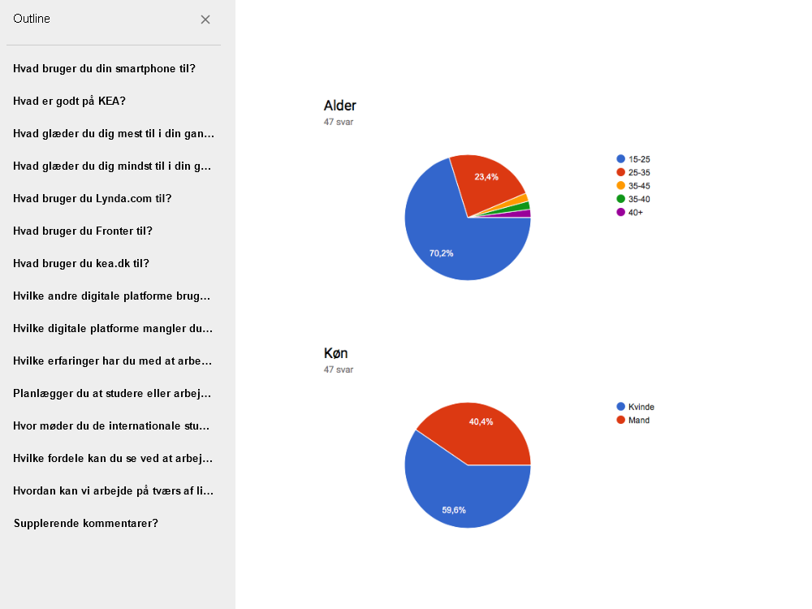Empathize emner
Behov:
- Samarbejde - fx dele grupper/projekter på tværs af holdene?
- Netværk - Udvide netværk på tværs af nationaliteter?
- Kreativitet/sprog - Flere nye ideer og kreative hoveder. Man har muligheden for at forbedre sit engelsk?
- Sprog - Træning i at arbejde, evt. med udfordringer som sprogbarrierer?
Handlinger/føleleser:
- Møder ikke rigtig de internationale studerende (mangel på kontakt)
- Møder kun de internationale studerende til fredagsbar (ikke faglig kontakt)
- Savner et chat forum for kea studerende, hvor man let kan dele filer og lave grupper m.m. (kontakt/hjælp/organisering)
- Mangler app til skema. Et ordentligt forum til overblik over opgaver og lektier (mangler overblik)
Spørgeguide:
- Synes du, at det er svært, når der skal dannes grupper til skoleopgaver?
- Ville en app til at danne grupper med være en god idé?
- Tror du på, at en app med gruppedannelse på tværs af sproglinjer vil fungere?
- Kommentarer?
Experience map
Post-its lavet på baggrund af spørgeskema, og opdelt efter retning på app-idé eller mere generel forbedring af studiemiljøet/skolen:
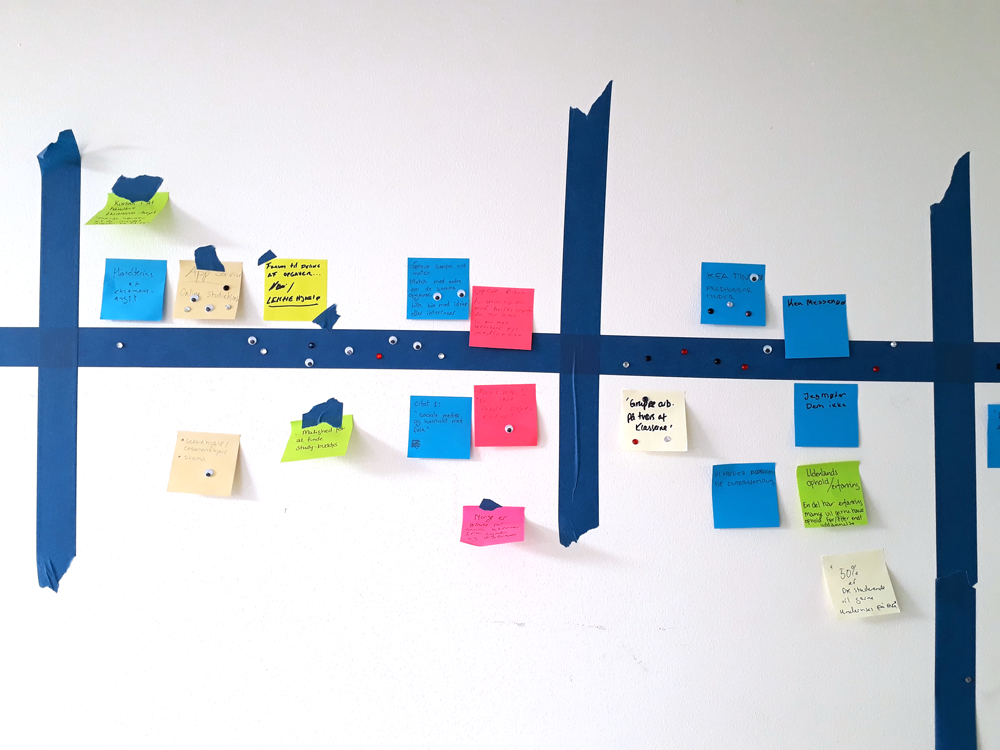 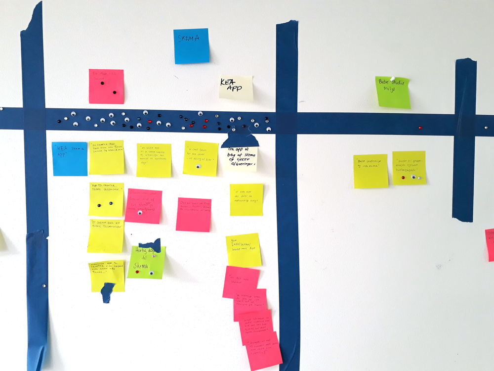 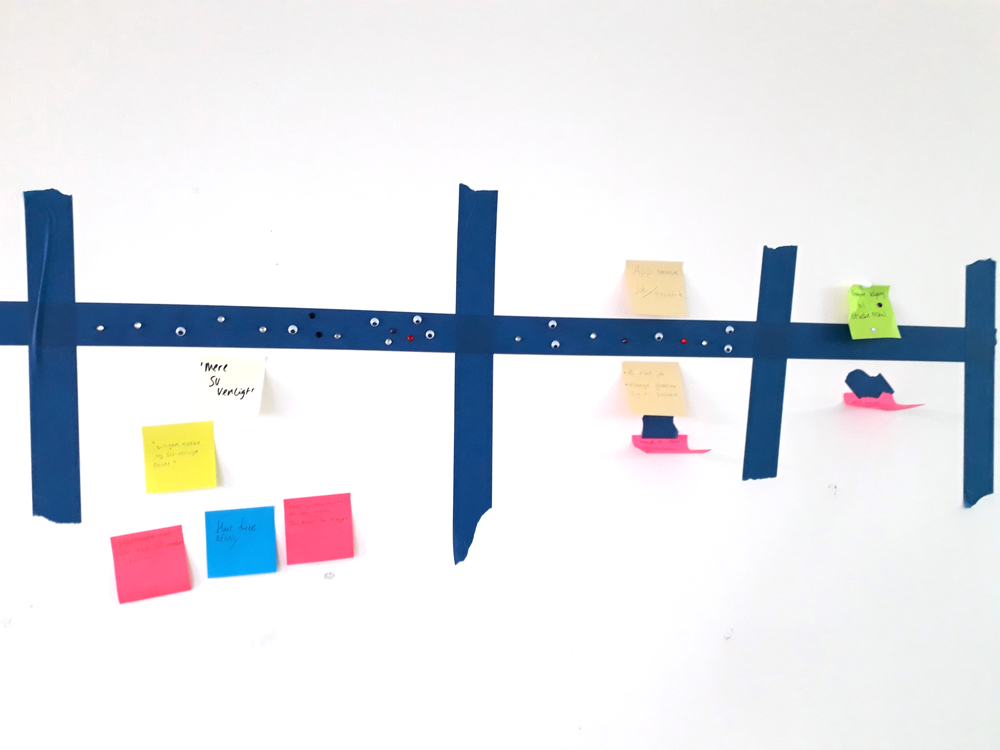Arbejdscitater:

Problemformulering
Primært: Gruppedannelse - også på tværs af sproglinjer.
Der kan nogle gange være en udfordring at danne grupper - blot i en almindelige klasse - og det er meget få, som bare kaster sig ud i det med de udenlandske studerende - om det så drejer sig om en fast skoleopgave, et lektiesamarbejde, arrangement, m.m.
Evt. sekundært: Forum for studerende og tilgang til sit skema i mobilform.
Der kan ofte være behov for svar på spørgsmål om igangværende opgaver, praktiske problemer/uklarheder, eller et skema, som ikke kan ses ordentligt på mobilen.
Problemet er bl.a. (pains)
- Svært at danne de rigtige grupper ift. variation (folk vælger ofte de samme personer) og/eller kompetencer.
- Manglende kontakt til de udenlandske studerende.
- Manglende struktur/organisering.
Ønsket er (goals):
- Få en god, organiseret arbejdsgang
- Få velfungerende grupper
- Blive bedre til engelsk, og udvide sin kulturelle horisont
Udviklingsmål:
Problemet vil være løst, når man bevæger sig bort fra en "smal" gruppedannelse/organisering, til en "bred", med mange input, som stadig har en fornuftig, faglig sammensætning?
Løsning: Udvikle en app, hvor man danne arbejdsgrupper mellem KEAs uddannelseshold (fx A og B), de internationale sproglinjer, eller andre, hvis det giver mening?
Jeg tænker, at man skal kunne oprette en gruppe, og forespørge de tilgængelige elever om deltagelse i gruppen, efter nogle valgte parametre - også evt. også til noget "ikke-opgavebaseret", fx samarbejde om lektier, eller lignende.
Som ekstra features kan være chatforum, skemavisning, eller andre tool, som kan tilføjes senere.
Persona

Persona er baseret på resultaterne fra det fælles spørgeskema, hvor især graferne hurtig viser topscorerne i hver kategori, og giver en fornuftig "gennemsnits-type". Et godt kendskab til sine medstuderende som "gruppe", gør naturligvis også at man kan foretage et kvalificeret gæt, hvis mere personlige attributter skal med i persona-fortællingen.
Storyboard
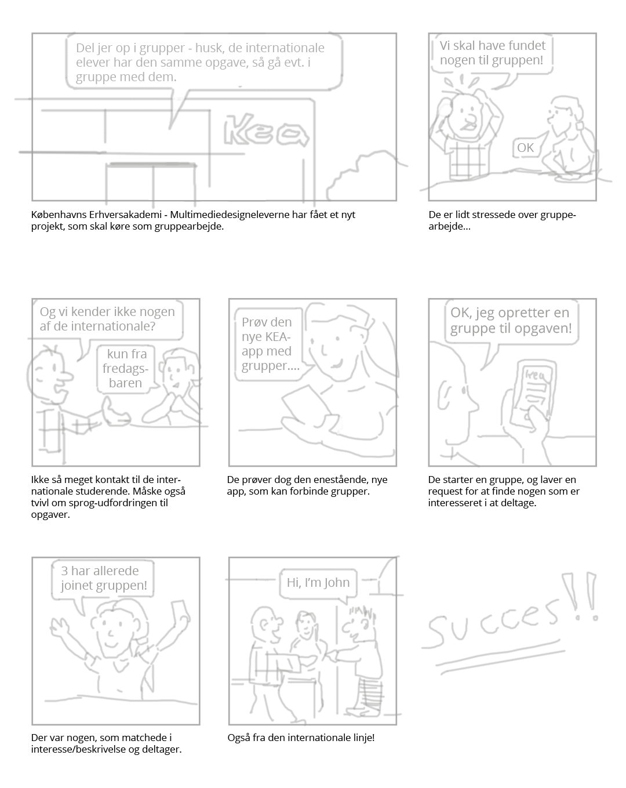Features og funktionaliteter
Phone features:
- Fuld skærm
- Push beskeder
- Tastatur
Brugersituationer:
- Oprette/redigere/slette profil
- Oprette gruppe
- Joine gruppe
- Søge efter deltagere, som vil joine egen gruppe
- Slette gruppe
Brugerkontekst:
- Slå noget op/find noget: Bruges som regel i klassen/skolen, når der er uddelt et projet, som kræver gruppearbejde.
- Rediger/opret: Når grupper skal passes/organiseres
Jeg ville bruge det, hvis der hurtigt skal laves nogle grupper, eller hvis de skal være mere blandede end normalt - fx med de udenlandske studerende, på det planlagt forløb
Android / iphone:
Jeg laver den umiddelbart prototypen i Android-format i Adobe DX, da jeg har mobil til at kunne teste den størrelse. Det kan evt. senere kan produceres som webapp, hvor visningen bliver ens, og der er taget forbehold for brugsforskelle mellem telefontyperne, som kan spille ind.
AOF Aktiviteter:
- Oprette/redigere/slette profil
- Oprette gruppe
- Joine gruppe
- Søge efter deltagere, som vil joine egen gruppe
- Slette gruppe
AOF Objekter:
- Gruppe-"kasser"
- Knapper/ikoner
AOF Features/funktionaliteter:
- Home
- Grupper
- - - Opret gruppe
- - - - - Skriv gruppenavn
- - - - - Vælg kategori
- - - - - Skriv gruppebeskrivelse
- - - Mine grupper
- - - Rediger/slet gruppe
- Profil
- - - Opret profil
- - - - - Skriv brugernavn
- - - - - Skriv kea-mail
- - - - - Skriv adgangskode
- - - - - Gentag adgangskode
- - - - - Vælg foretrukne opgavetyper med rating 1-5
- - - Rediger/slet profil
Features tilføjet efter første test af DX-prototype & pitch
- Sprogskifte - dansk/engelsk
- Omstruktureret gruppe-visning/styring med visningsfilte og "match" mellem grupper og deltagere
- Facebook-login
- Beskeder og svar på gruppeforespørgsler som menupunkt under grupper - Notifikationer. Udråbs-symbol.
- En tilbage-knap i topmenu
- Log-ud, sprogskifte og Om kea-appen i topmenuen
- Admin-punkt ændret til "Mine Grupper". Hak beholdt som symbol
- Stjerne-symbol for "match" i gruppe-liste og ved forespørgsler.
- Klik på Match-symbol for at kriterier
- Tragt-symbol for filtering ved gruppe-liste, og filtrering valg ved gruppe-liste.
- Redigering ved relevante emner. Pen-symbol.
- Søgefelt i gruppe-liste
- Log-ud skærm
Dokumentation af Design Charette
Første udkast (delvist forkastet) - Painpoint: Problem med opgave (forum-idé)
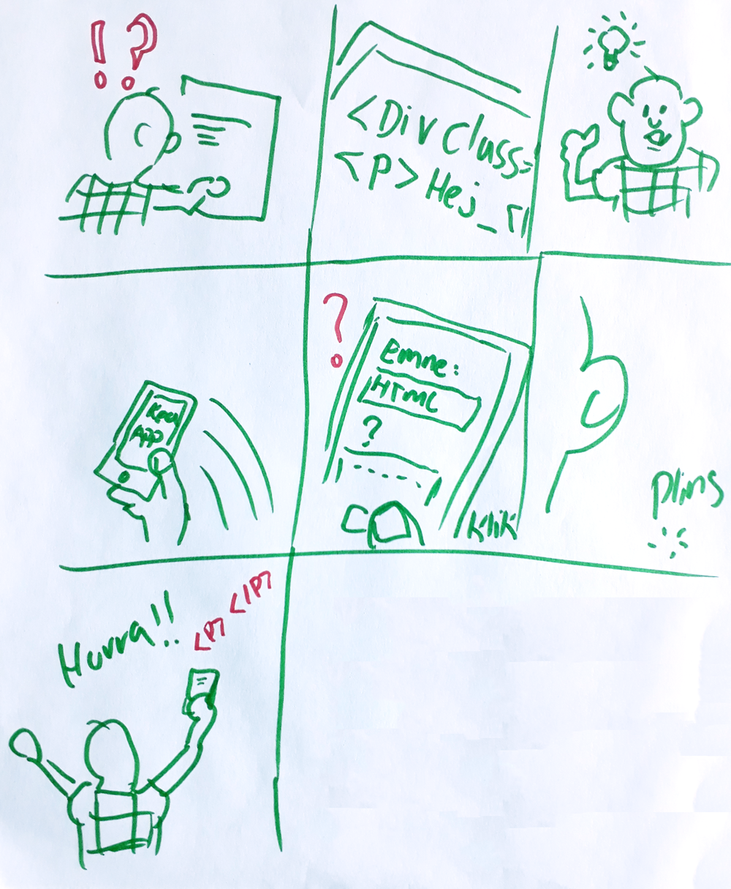Andet udkast - Painpoint: Gruppedannelse til projekt/opgave
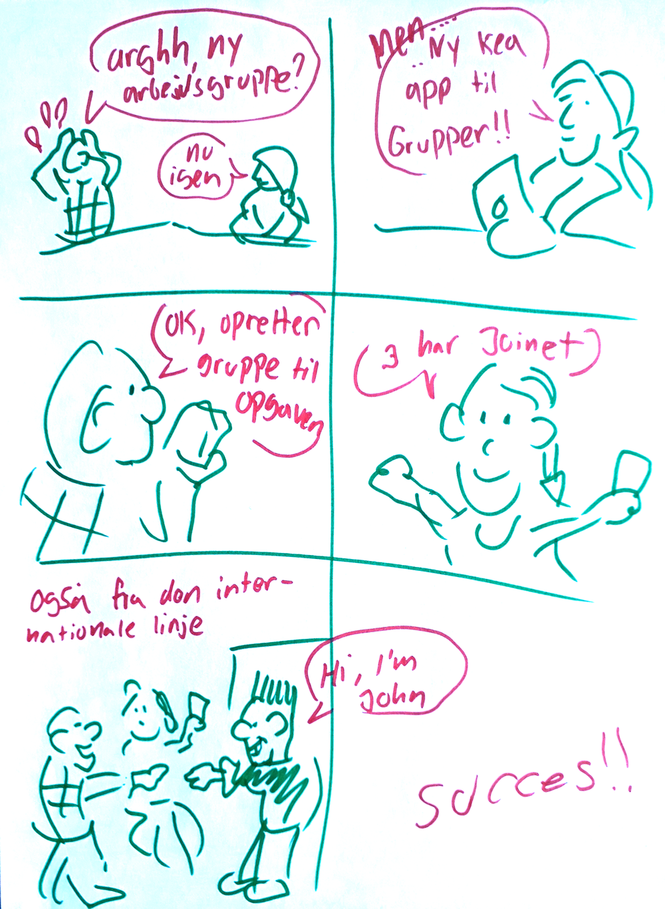Prototype
Startskærm - klik på "Opret profil"-knappen (lidt nede)
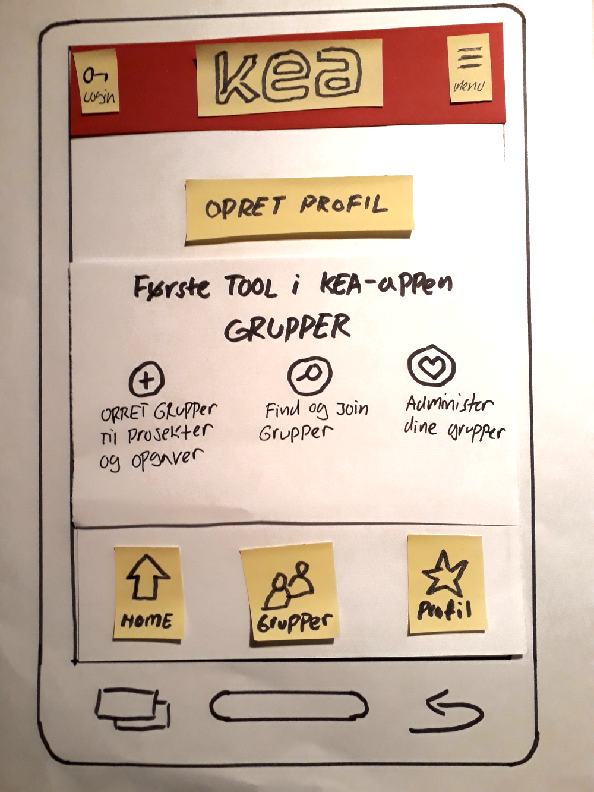Profilside - Klik på "Næste"-knappen
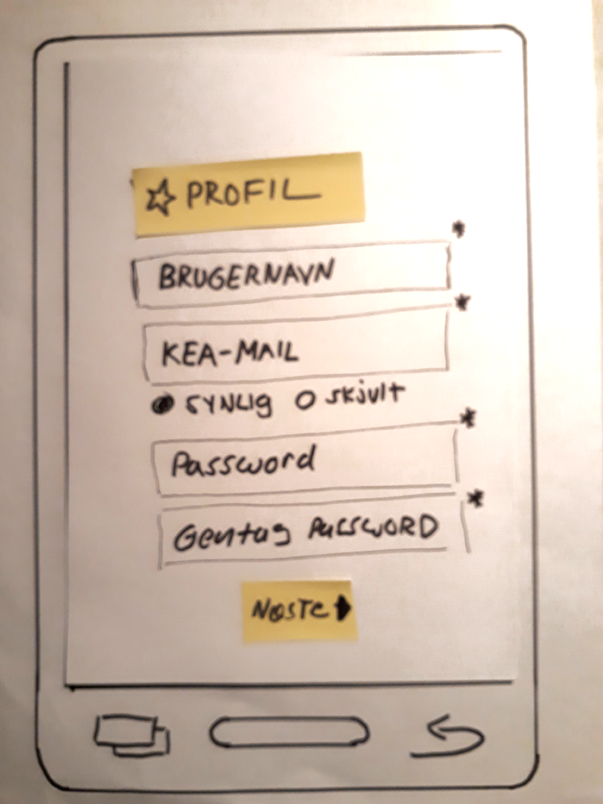Profilside del 2 - klik på "Næste"-knappen igen
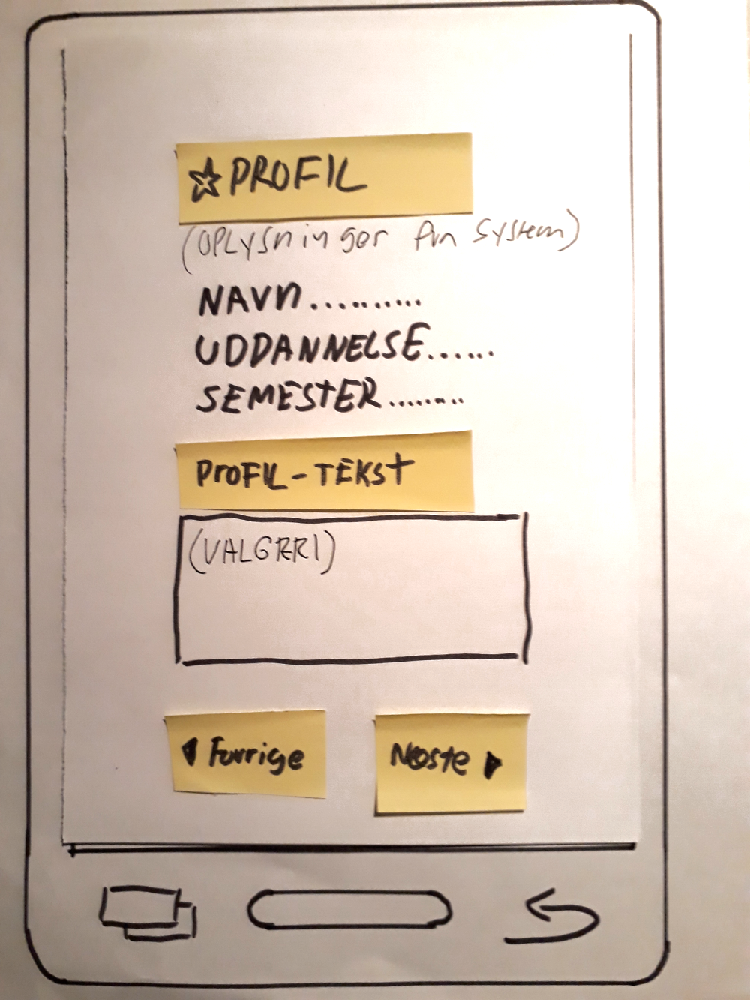Profilside del 3 klik på "Gem"-knappen for at afslutte profilen
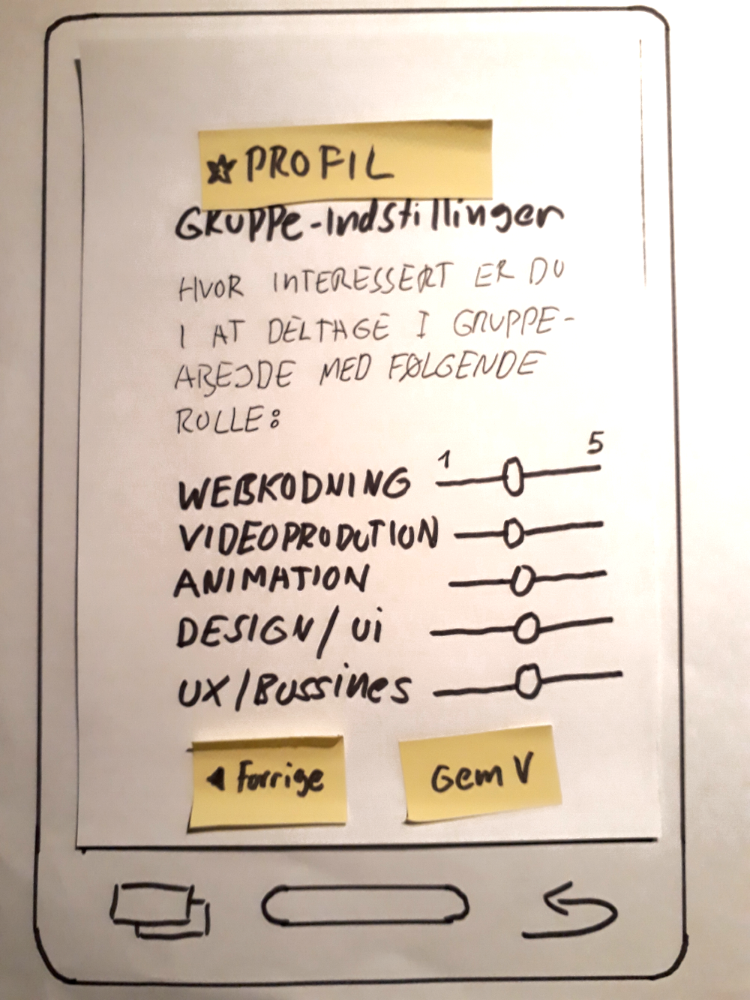Tilbage til startskærm - klik på "grupper"-ikonet (nederst på siden)
Gruppe-side
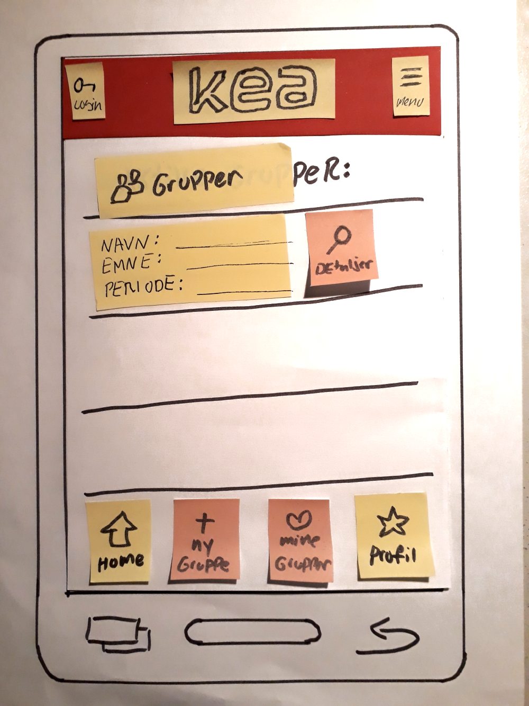UI-ikoner
Skitser/optegning af ikoner i Illustrator
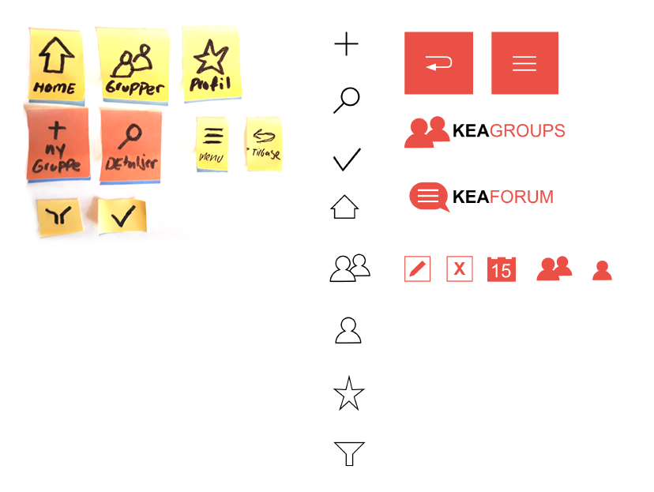XD prototype
Første udgave til test (ikke helt færdig)
Test af prototype
Indledende test at den highres DX-prototype (førsteudgaven) er en retrospektiv tænke-højt-test, hvor 3 testpersoner har prøvet den på en android mobil via DX-appen/Creative Cloud, og som jeg efterfølgende har interviewet om deres brugeroplevelse.
Dertil kommer de fysiske observationer, som jeg har gjort mig under testen (What/how/why).
Testen er en "lightudgave", forstået på den måde, at prototypen ikke er færdig, men da jeg ville gerne have nogle brugbare tilbagemeldinger allerede på nuværende tidspunkt, er den i første omgang er uden video. Testpersonerne er fra både hold A og B.
Reaktionerne er generelt positive, men der er også forslag til forbedringer. Det var ikke min opfattelse, at der var tøven eller usikkerhed med hensyn til, hvad der skulle klikkes på.
De opfølgende spørgsmål er:
- Synes du om udformningen/designet af appen?
- Giver funktionerne mening?
- Mangler du features?
- Er der noget, som ikke duer?
Post-its med svar
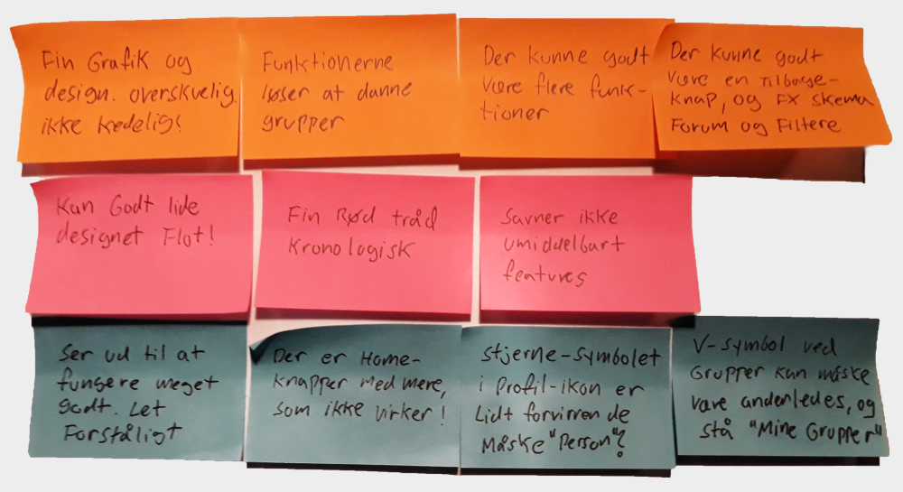Som reaktion på svarene vil jeg arbejde med følgende ændringer:
- En tilbage-knap - fx øverst til venstre i headeren
- En forum-del til appen, hvis det er muligt tidsmæssigt
- Gennemgå alle knappers wires i DX, så de virker
- Gentænke ikon for profil, måske en enkelt silhuet, som ved grupperne.
- Gentænke ikon for admin, "hakket" er måske også tvivlsomt?
Egne tillæg
- Der er absolut brug for sprogskifte mellem dansk/engelsk, med tanke på de udenlandske studerende
- Facebook-login
Pitch-oplæg
Resumé:
KEA Groups: App til at danne grupper til opgaver, projekter, m.m.
- Profil med KEA-mail - Oprette grupper - søger deltagere - emne & beskrivelse
- Liste med aktive grupper at joine - Indstillinger - hvilke områder man er interesseret i til match
- Adskiller sig fra Facebook m.m. ved at den via KEA-profil giver respons fra relevante studerende i klassen/uddannelsesstedet - og ikke hvem man har kontakt til på sociale medier
- "Nem" mulighed for gruppedannelse... dette kan altid diskuteres!
Problemer - løsninger
- Tendens til at vælge de samme personer (samme idéer/kompetencer) App: Nye sammensætninger
- App: Skabe kontakt til udenlandske studerende - bekymrer sig om det sproglige
- Interesser for emnet eller fagområdet App: Søgebesskrivelse og stille interesser i profil - match kommer øverst
- Udviddelsesmuligheder: Forum, Skema, Arrangementer, m.m.
Pitch slideshow (fik ikke brug for dette, da jeg viste en gennemgang af appen i stedet.
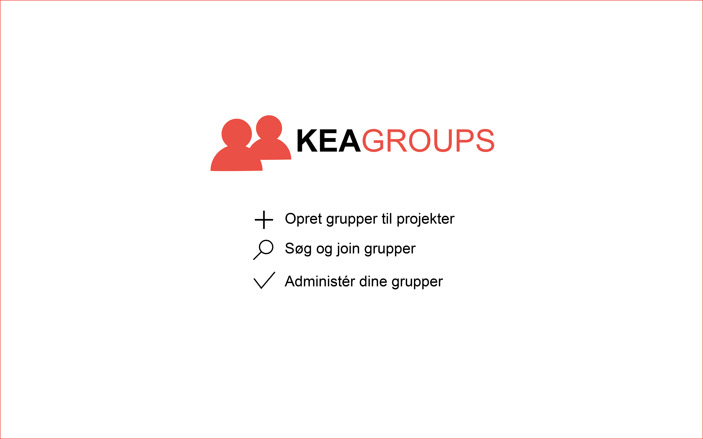Feedback fra pitch:
- Der var rimelig god respons - folk synes om opsætningen/grafik og mener at den har et et professionelt udeende.
- Overvej om det kan skabe sociale gnidninger/problomer , hvis en request om at joine en gruppe bliver afvist, og om der findes en løsning til at undgå dette.
- Der skal muligvis filtreringsmuligheder ind ved visningsreultater af grupper, hvis det bliver en lang liste.
DX-prototype 2
Video-test af prototype med testperson via screenrecorder
Introduktion til testperson: Dette er en app til at danne grupper med på KEA, fx til projekter. Gå ind på den, opret dig som bruger, og kig på de forskellige muligheder og værktøjer til gruppedannelse.
Efterfølgende interviewer jeg testpersonen omkring brugeroplevelsen
Opfølgende interview:
- Hvad synes du om udformningen af appen?
- Er den nem at navigere rundt i?
- Er der ting, som er forvirrende?
- Er der noget du savner?
Noter fra interview:
- Det ser meget professionelt ud, jeg kunne tro, at det er en rigtig app
- Den var nem at finde rundt i - der var få knapper at tage stilling til
- Nem at søge i
- Layoutet er meget enkelt
- Måske er det ikke helt klart hvad forskellen er, når med logger på med Facebook?
- Havde ikke set, at der var sprogskifte til engelsk, men syndes at det er OK i topmenuen
På baggrund af testen er prototypeudviklingen afsluttet for denne gang.
Præsentation af XD-prototype
Endelig DX-prototype: